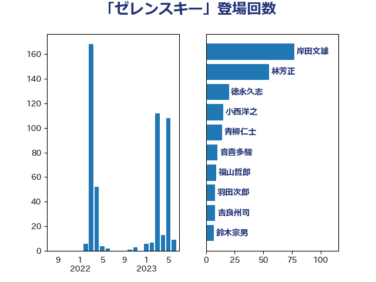

単語「ゼレンスキー」

| 岸田文雄 | 自由民主党 | 77 回 |
| 林芳正 | 自由民主党 | 55 回 |
| 徳永久志 | 無所属 | 20 回 |
| 小西洋之 | 立憲民主党 | 15 回 |
| 青柳仁士 | 日本維新の会 | 14 回 |
| 音喜多駿 | 日本維新の会 | 10 回 |
| 福山哲郎 | 立憲民主党 | 9 回 |
| 羽田次郎 | 立憲民主党 | 8 回 |
| 吉良州司 | 無所属 | 8 回 |
| 鈴木宗男 | 日本維新の会 | 7 回 |
| 杉本和巳 | 日本維新の会 | 6 回 |
| 太栄志 | 立憲民主党 | 6 回 |
| 高橋光男 | 公明党 | 5 回 |
| 鈴木敦 | 国民民主党 | 5 回 |
| 辻清人 | 自由民主党 | 5 回 |
| 神谷宗幣 | 参政党 | 5 回 |
| 浅田均 | 日本維新の会 | 5 回 |
| 松川るい | 自由民主党 | 5 回 |
| 吉田宣弘 | 公明党 | 5 回 |
| 鈴木俊一 | 自由民主党 | 4 回 |
| 金子道仁 | 日本維新の会 | 4 回 |
| 熊谷裕人 | 立憲民主党 | 4 回 |
| 渡辺周 | 立憲民主党 | 4 回 |
| 岩本剛人 | 自由民主党 | 4 回 |
| 奥野総一郎 | 立憲民主党 | 4 回 |
| 丸川珠代 | 自由民主党 | 4 回 |
| 谷合正明 | 公明党 | 3 回 |
| 石垣のりこ | 立憲民主党 | 3 回 |
| 森本真治 | 立憲民主党 | 3 回 |
| 松原仁 | 立憲民主党 | 3 回 |
| 東徹 | 日本維新の会 | 3 回 |
| 斎藤アレックス | 国民民主党 | 3 回 |
| 山添拓 | 日本共産党 | 3 回 |
| 和田有一朗 | 日本維新の会 | 3 回 |
| 加田裕之 | 自由民主党 | 3 回 |
| 伊藤信太郎 | 自由民主党 | 3 回 |
| 伊波洋一 | 無所属 | 3 回 |
| 上田清司 | 国民民主党 | 3 回 |
| 上杉謙太郎 | 自由民主党 | 3 回 |
| 青木愛 | 立憲民主党 | 2 回 |
| 足立康史 | 日本維新の会 | 2 回 |
| 蓮舫 | 立憲民主党 | 2 回 |
| 穀田恵二 | 日本共産党 | 2 回 |
| 福重隆浩 | 公明党 | 2 回 |
| 石井苗子 | 日本維新の会 | 2 回 |
| 田島麻衣子 | 立憲民主党 | 2 回 |
| 櫻井周 | 立憲民主党 | 2 回 |
| 榛葉賀津也 | 国民民主党 | 2 回 |
| 斉藤鉄夫 | 公明党 | 2 回 |
| 平林晃 | 公明党 | 2 回 |
| 岡本あき子 | 立憲民主党 | 2 回 |
| 山本太郎 | れいわ新選組 | 2 回 |
| 小田原潔 | 自由民主党 | 2 回 |
| 宮本周司 | 自由民主党 | 2 回 |
| 和田政宗 | 自由民主党 | 2 回 |
| 古屋圭司 | 自由民主党 | 2 回 |
| 前原誠司 | 国民民主党 | 2 回 |
| 伊藤達也 | 自由民主党 | 2 回 |
| 井上哲士 | 日本共産党 | 2 回 |
| 齋藤健 | 自由民主党 | 1 回 |
| 高橋はるみ | 自由民主党 | 1 回 |
| 阿部司 | 日本維新の会 | 1 回 |
| 長浜博行 | 無所属 | 1 回 |
| 鈴木隼人 | 自由民主党 | 1 回 |
| 金城泰邦 | 公明党 | 1 回 |
| 道下大樹 | 立憲民主党 | 1 回 |
| 足立敏之 | 自由民主党 | 1 回 |
| 赤澤亮正 | 自由民主党 | 1 回 |
| 西田昌司 | 自由民主党 | 1 回 |
| 西村康稔 | 自由民主党 | 1 回 |
| 藤田文武 | 日本維新の会 | 1 回 |
| 荒井優 | 立憲民主党 | 1 回 |
| 茂木敏充 | 自由民主党 | 1 回 |
| 若松謙維 | 公明党 | 1 回 |
| 臼井正一 | 自由民主党 | 1 回 |
| 篠原豪 | 立憲民主党 | 1 回 |
| 神田憲次 | 自由民主党 | 1 回 |
| 石井正弘 | 自由民主党 | 1 回 |
| 生稲晃子 | 自由民主党 | 1 回 |
| 玉木雄一郎 | 国民民主党 | 1 回 |
| 猪瀬直樹 | 日本維新の会 | 1 回 |
| 猪口邦子 | 自由民主党 | 1 回 |
| 泉健太 | 立憲民主党 | 1 回 |
| 河西宏一 | 公明党 | 1 回 |
| 武見敬三 | 自由民主党 | 1 回 |
| 横沢高徳 | 立憲民主党 | 1 回 |
| 横山信一 | 公明党 | 1 回 |
| 梅谷守 | 立憲民主党 | 1 回 |
| 柴田巧 | 日本維新の会 | 1 回 |
| 柴山昌彦 | 自由民主党 | 1 回 |
| 柳ヶ瀬裕文 | 日本維新の会 | 1 回 |
| 本田顕子 | 自由民主党 | 1 回 |
| 末松義規 | 立憲民主党 | 1 回 |
| 末松信介 | 自由民主党 | 1 回 |
| 木原誠二 | 自由民主党 | 1 回 |
| 有村治子 | 自由民主党 | 1 回 |
| 新藤義孝 | 自由民主党 | 1 回 |
| 斎藤洋明 | 自由民主党 | 1 回 |
| 平木大作 | 公明党 | 1 回 |
| 岸真紀子 | 立憲民主党 | 1 回 |
| 岡本三成 | 公明党 | 1 回 |
| 山田賢司 | 自由民主党 | 1 回 |
| 山本博司 | 公明党 | 1 回 |
| 山口壯 | 自由民主党 | 1 回 |
| 小熊慎司 | 立憲民主党 | 1 回 |
| 安江伸夫 | 公明党 | 1 回 |
| 守島正 | 日本維新の会 | 1 回 |
| 大家敏志 | 自由民主党 | 1 回 |
| 大塚耕平 | 国民民主党 | 1 回 |
| 大口善徳 | 公明党 | 1 回 |
| 堀井巌 | 自由民主党 | 1 回 |
| 城内実 | 自由民主党 | 1 回 |
| 坂井学 | 自由民主党 | 1 回 |
| 古賀之士 | 立憲民主党 | 1 回 |
| 北村経夫 | 自由民主党 | 1 回 |
| 北側一雄 | 公明党 | 1 回 |
| 勝部賢志 | 立憲民主党 | 1 回 |
| 務台俊介 | 自由民主党 | 1 回 |
| 佐藤正久 | 自由民主党 | 1 回 |
| 佐藤啓 | 自由民主党 | 1 回 |
| 住吉寛紀 | 日本維新の会 | 1 回 |
| 伊藤岳 | 日本共産党 | 1 回 |
| 伊藤俊輔 | 立憲民主党 | 1 回 |
| 中野洋昌 | 公明党 | 1 回 |
| 中島克仁 | 立憲民主党 | 1 回 |
| 三上えり | 立憲民主党 | 1 回 |